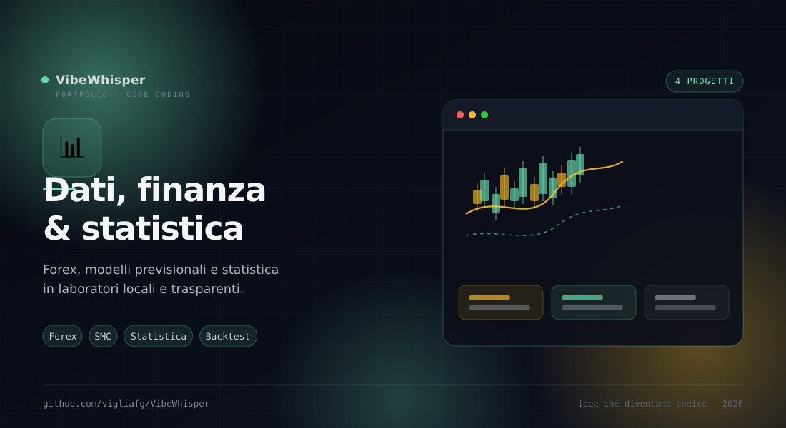

📊
Dati, finanza & statistica
Forex, modelli previsionali e statistica inferenziale in laboratori locali e trasparenti. Strumenti per leggere il mercato e i dati senza abbonamenti.
4
Progetti
3
Coppie FX
9
Modelli previsionali
400+
Controlli automatici
Sezione 04 · Dati
Leggere il mercato e i numeri
Quattro laboratori che condividono lo stesso approccio: mostrare i calcoli, dichiarare i limiti e lasciare all'utente la lettura finale. Due sono focalizzati sul forex, uno aggiunge l'AI, uno è statistica generale.
Come sono collegati
Fili comuni
La finanza è coperta da tre angoli diversi; LazStats chiude il cerchio con la statistica inferenziale.
- ForexSMC — L'analizzatore focalizzato su SMC/ICT: struttura, liquidità, order block, FVG e bias.
- ForexVision — Aggiunge sentiment, confluenza e un verdetto unico tra tecnica, SMC e notizie.
- ForexFlow AI — Aggiunge nove modelli previsionali e insight AI su EUR/USD.
- LazStats JS — Il laboratorio statistico generale: test parametrici, non parametrici e diagnostica.